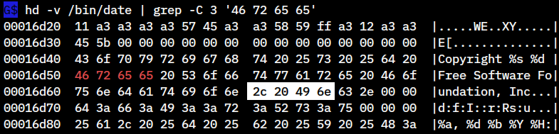
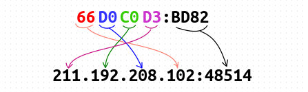

Built-in Functions
카테고리가 많이 나누어져 있어서 함수가 많을것같지만 string, numeric 함수를 제외하면 몇개 안됩니다.
그리고 string, numeric 함수도 실제 많이 사용되는 함수들만 있습니다.
- Numeric Functions
Functions that work with numbers, includingint(),sin()andrand().
- String Functions
Functions for string manipulation, such assplit(),match()andsprintf().
- I/O Functions
Functions for files and shell commands.
- Time Functions
Functions for dealing with timestamps.
- Bitwise Functions
Functions for bitwise operations.
- Type Functions
Functions for type information.
- I18N Functions
Functions for string translation.
Quiz
awk 는 주로 텍스트 데이터를 처리하는 용도로 사용되지만
-b 옵션을 이용하면 바이너리 데이터도 다룰 수 있습니다.
- 다음은 /bin/date 실행파일 내에서 특정 4 바이트 값의 offset 을 구한 다음
- + 24 한 위치에서
- 4 바이트 값을 추출해서 hex 값을 출력하고
- little endian 으로 처리한 정수값을 출력합니다.
아래 붉은색으로 보이는 4 바이트 값이 offset 을 구할값이고 + 24 위치의 값이 흰색으로 처리된 부분입니다.
"6f 3a 20 25" 값이 조회가 안될경우 hd -v /bin/date 출력에서 임의의 다른 값을 사용해도 됩니다.

awk 는 python 의 chr() 나 ord() 같은 함수가 없기 때문에
BEGIN 블록에서 먼저 256 개의 char 값을 index 로 하는 array 를 설정하여
ord() 함수에서처럼 쉽게 정수값을 구할 수 있게 합니다.
$ awk 'BEGIN { printf "%c", 65 }' # chr(65) 와 같음
A
$ awk 'BEGIN {
for (i = 0; i <= 255; i++)
a[ sprintf("%c", i) ] = i
printf a["A"] # ord('A') 와 같음
}'
65
RS 값을 "^$" 로 설정하였으므로 전체 데이터가 하나의 레코드로 입력이 되겠고
FS 값이 "" 이므로 각각의 바이트 값이 하나의 필드값과 매칭이 됩니다.
따라서 NF 값은 파일 사이즈와 같게 되겠죠.
$ awk -b -f - <<\EOF val=0x6f3a2025 /bin/date
BEGIN {
RS="^$"; FS=""
for (i = 0; i <= 255; i++) a[ sprintf("%c", i) ] = i
}{
print "file size : " length($0)
# 외부로부터 입력되는 val=0x6f3a2025 값은 스트링이므로 index 함수로
# 바이너리 파일 내에서 바이트 값을 검색하려면 먼저 char 값으로 변경합니다.
patsplit(val, f, /.{2}/)
v = sprintf("%c%c%c%c", strtonum("0x" f[2]), strtonum("0x" f[3]), \
strtonum("0x" f[4]), strtonum("0x" f[5]))
if ( (i2 = index($0, v)) > 0 )
print "value " val " found! at : " i2 " offset"
else
exit 1
# offset + 24 한 위치에서 4 바이트의 hex 값을 출력합니다.
i = i2 + 24
printf("4 bytes hex value at " i2 " + 24 : ")
printf("0x%02x%02x%02x%02x\n", a[$(i)], a[$(i+1)], a[$(i+2)], a[$(i+3)])
# little endian 으로 정수값을 출력해야 하므로 a[$i] 값이 끝으로 갑니다.
printf("convert to decimal value : ")
le = sprintf("0x%02x%02x%02x%02x", a[$(i+3)], a[$(i+2)], a[$(i+1)], a[$(i)])
print strtonum(le) " (little endian)"
}
EOF
file size : 108920
value 0x6f3a2025 found! at : 91761 offset
4 bytes hex value at 91761 + 24 : 0x2e6f7267
convert to decimal value : 1735552814 (little endian)
offset 을 구할 때 사용되는 hex 값이 외부로부터 스트링으로 입력되는 경우에는 검색을 위해
스트링 -> char 변환을 거쳐야 되므로 다음은 직접 스크립트 내에서 설정해 사용합니다.
그리고 정수값을 출력할 때 53 bits 를 초과하는 값이면 -M 옵션을 사용해야
올바르게 값이 출력됩니다.
$ awk -b -f - <<\EOF /bin/date
BEGIN {
RS="^$"; FS=""
for (i = 0; i <= 255; i++) a[ sprintf("%c", i) ] = i
}{
print "file size : " length($0)
v = "\x6f\x3a\x20\x25" # 직접 스크립트 내에서 검색할 바이트 값을 설정
patsplit(v, f, /./)
val = sprintf( "0x%02x%02x%02x%02x", a[f[1]], a[f[2]], a[f[3]], a[f[4]] )
if ( (i2 = index($0, v)) > 0 )
print "value " val " found! at : " i2 " offset"
else
exit 1
i = i2 + 24
printf("4 bytes hex value at " i2 " + 24 : ")
printf("0x%02x%02x%02x%02x\n", a[$(i)], a[$(i+1)], a[$(i+2)], a[$(i+3)])
printf("convert to decimal value : ")
le = sprintf("0x%02x%02x%02x%02x", a[$(i+3)], a[$(i+2)], a[$(i+1)], a[$(i)])
# 출력하는 정수값이 53 bits 를 초과하면 '-M' 옵션을 사용해야 합니다.
print strtonum(le) " (little endian)"
}
EOF
2 .
/proc/net/tcp 값을 출력해보면 local_address 와 rem_address 값이 16 진수로 나오는데요.
이것을 10 진수로 바꾸어서 출력하는 것입니다.
이때 한가지 주의할 점은 바이트 값의 순서입니다.

$ less /proc/net/tcp
sl local_address rem_address st tx_queue rx_queue tr tm->when ....
0: 017AA8C0:0035 00000000:0000 0A 00000000:00000000 00:00000000 ....
1: 3500007F:0035 00000000:0000 0A 00000000:00000000 00:00000000 ....
2: 0100007F:0277 00000000:0000 0A 00000000:00000000 00:00000000 ....
3: 0100007F:823D 00000000:0000 0A 00000000:00000000 00:00000000 ....
4: 66D0C0D3:9726 901F123B:01BB 01 00000000:00000000 02:00000693 ....
5: 66D0C0D3:ECEA 9923E69D:01BB 01 00000000:00000000 02:00000734 ....
6: 66D0C0D3:E366 E5C53AD8:01BB 06 00000000:00000000 03:00000110 ....
. . . .
. . . .
$ awk -f - <<\EOF /proc/net/tcp
NR > 1 {
loc_ip = getip( substr($2,1,8))
loc_port = strtonum("0x" substr($2,10,4))
rem_ip = getip( substr($3,1,8))
rem_port = strtonum("0x" substr($3,10,4))
printf "%-30s %s\n", loc_ip ":" loc_port, rem_ip ":" rem_port
}
function getip( str, i, n, f, res) {
n = patsplit( str, f, /[[:xdigit:]]{2}/)
for ( i = n; i >= 1; i-- )
res = res sprintf("%s%s", strtonum("0x" f[i]), (i > 1) ? "." : "")
return res
}
EOF
192.168.122.1:53 0.0.0.0:0
127.0.0.53:53 0.0.0.0:0
127.0.0.1:631 0.0.0.0:0
127.0.0.1:33341 0.0.0.0:0
211.192.208.102:38694 59.18.31.144:443
211.192.208.102:60650 157.230.35.153:443
211.192.208.102:58214 216.58.197.229:443
211.192.208.102:36740 52.42.195.146:443
. . . .
. . . .